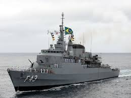

contexto
A Batalha do Atlântico foi a campanha naval mais longa e estratégica da Segunda Guerra Mundial. Iniciada em 3 de setembro de 1939, poucas horas após a Grã-Bretanha declarar guerra à Alemanha, e encerrada apenas em 8 de maio de 1945, no Dia da Vitória na Europa (VE Day), ela se estendeu por quase seis anos. Foi um conflito decisivo, pois garantiu o fluxo de suprimentos, tropas e armamentos entre a América do Norte e a Europa. Sem essa vitória, os Aliados dificilmente teriam sustentado a guerra contra a Alemanha nazista.
Aonde aconteceu?
O teatro de operações foi vasto, abrangendo:
- O Oceano Atlântico em toda sua extensão.
- O Rio da Prata.
- O Mar do Norte e o Mar da Irlanda.
- O Mar de Labrador e o Golfo de São Lourenço.
- O Mar do Caribe e o Golfo do México.
- Além do Oceano Ártico, vital para o envio de suprimentos à União Soviética.
Essa amplitude mostra que a batalha não foi restrita apenas ao Atlântico Norte, mas envolveu praticamente todas as rotas marítimas estratégicas que conectavam os Aliados.
Por que aconteceu?
A batalha surgiu da necessidade vital de manter ou interromper as linhas de suprimento. Para a Alemanha, o objetivo era sufocar a Grã-Bretanha, cortando o abastecimento de alimentos, combustível, armas e matérias-primas. Os submarinos alemães, os temidos U-boats, eram a principal arma nessa estratégia. Para os Aliados, garantir a chegada desses recursos era essencial para resistir ao cerco nazista, planejar contra-ofensivas e, mais tarde, preparar a invasão da Europa ocupada.O almirante alemão Karl Dönitz reconheceu que os Estados Unidos demorariam a organizar comboios e construir navios suficientes para defesa. Por isso, a Alemanha explorou esse período inicial de fragilidade para tentar vencer a guerra no mar.
Quais foram as dificuldades?
A Batalha do Atlântico foi marcada por inúmeros desafios, tanto tecnológicos quanto estratégicos:
A ameaça dos U-boats:
Os submarinos alemães atacavam em grupos, conhecidos como wolfpacks (“matilhas de lobos”), cercando comboios à noite e afundando vários navios em poucas horas. Isso levou Churchill a admitir que os U-boats eram “a única coisa que realmente o assustava” durante a guerra.

O vazio aéreo do Atlântico
Durante anos, havia uma zona no meio do oceano sem cobertura de patrulha aérea aliada, chamada de Mid-Atlantic Gap. Nesse espaço, os comboios ficavam indefesos até a chegada de aviões de longo alcance, como o B-24 Liberator, que fecharam a brecha.
Os códigos da Enigma
As mensagens dos submarinos eram criptografadas pela máquina Enigma, dificultando que os Aliados previssem ataques. Apenas após a quebra dos códigos em Bletchley Park, as marinhas conseguiram vantagem estratégica.
Logística dos comboios
Organizar comboios de centenas de navios mercantes exigia coordenação precisa de rotas, escoltas e comunicação. Qualquer falha podia significar perdas devastadoras.
Altas perdas e necessidade de produção acelerada
Em certos períodos, os U-boats afundavam mais navios do que os Aliados conseguiam construir. Isso levou os EUA a investir em produção em massa de cargueiros rápidos e baratos, como os Liberty Ships.
Avanços tecnológicos alemães
A Alemanha introduziu torpedos acústicos, dispositivos de respiração submarina (schnorchel) e revestimentos anti-sonar. Essas inovações complicaram ainda mais a luta no mar até que os Aliados desenvolvessem contramedidas eficazes.
Como o Brasil participou?
O Brasil entrou na guerra em 22 de agosto de 1942, após ataques a navios mercantes brasileiros por submarinos do Eixo.
Entre 1942 e 1943, a Marinha do Brasil escoltou 3.167 navios em 614 comboios, transportando cerca de 16,5 milhões de toneladas de carga com baixíssima taxa de perdas (0,1%). O Brasil também participou ativamente no combate: em julho de 1943, em operação conjunta com os EUA, ajudou a afundar o submarino alemão U-199 no litoral do Rio de Janeiro. Cerca de 1.600 brasileiros morreram em consequência da campanha, entre civis e militares.
Armamentos Utilizados
- Submarinos U-boats armados com torpedos convencionais e acústicos.
- Cargas de profundidade lançadas por navios de escolta.
- Canhões antiaéreos nos submarinos alemães.
- Radar e sonar para detecção de submarinos.
- Aeronaves patrulheiras com radares centimétricos.
Quantas pessoas foram afetadas?
- O custo humano da batalha foi imenso:
- Aliados: cerca de 36.200 marinheiros de guerra e 36.000 mercantes mortos; 3.500 navios mercantes e 175 navios de guerra perdidos; 741 aeronaves derrubadas.
- Alemães: cerca de 30.000 tripulantes de U-boats morreram; 783 submarinos foram afundados.
- Brasil: aproximadamente 1.600 mortos em ataques e combates no Atlântico Sul.
- Estima-se que apenas entre os U-boats, 28.000 dos 41.000 tripulantes não sobreviveram.
Como foi ganha?
A virada veio a partir de 1943, com uma combinação de fatores decisivos:
Superioridade Tecnológica:
Uso do radar centimétrico, sonar (ASDIC), cargas de profundidade aprimoradas e o lançador Hedgehog.
Cobertura Aérea Total
Com o B-24 Liberator e porta-aviões de escolta, o Atlântico deixou de ter áreas sem defesa.
Quebra dos códigos da Enigma (Ultra):
Permitiu prever movimentações dos U-boats e redirecionar comboios com segurança.
Produção industrial em massa:
Os EUA fabricaram milhares de navios mercantes e de guerra, garantindo suprimentos constantes.
Melhor coordenação dos comboios:
Destróieres e fragatas especializadas em escolta reduziram drasticamente as perdas.
Curiosidades:
A Batalha do Atlântico foi fundamental para o desfecho da guerra.
A derrota dos U-boats possibilitou:
- O sucesso da invasão da Normandia (Dia D), já que tropas e suprimentos chegaram com segurança.
- A implementação posterior do Plano Marshall, que dependia da livre circulação marítima.
- A consolidação da cooperação militar entre os Aliados, especialmente entre Reino Unido, EUA, Canadá e Brasil.
Por sua duração, intensidade e importância, a Batalha do Atlântico é considerada a campanha naval mais longa e decisiva da Segunda Guerra Mundial.
Fontes:
https://en.wikipedia.org/wiki/Battle_of_the_Atlantic
https://oceanexplorer.noaa.gov/explorations/16battlefield/background/battle/battle.html
https://courses.lumenlearning.com/suny-hccc-worldhistory2/chapter/conflict-in-the-atlantic/
https://www.iwm.org.uk/history/the-battle-of-the-atlantic-explained
https://en.wikipedia.org/wiki/Brazilian_Expeditionary_Force
BBC
Brazilian Navy in WW2 - Marinha do Brasil